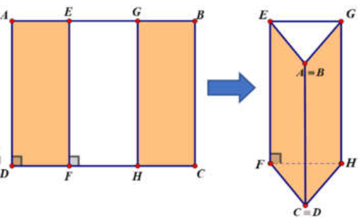
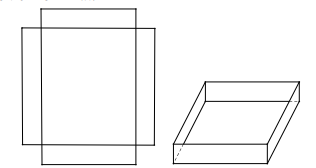
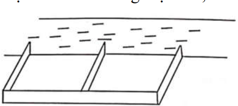
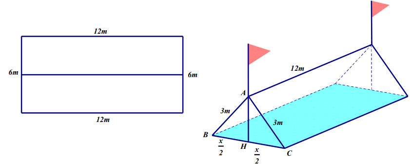
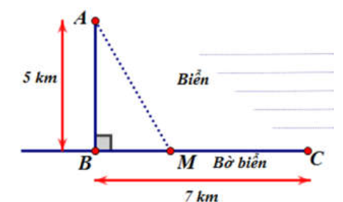
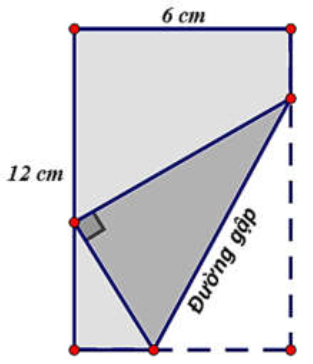
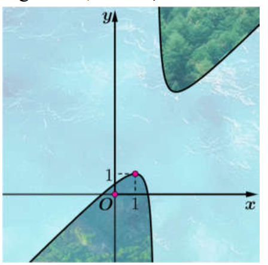
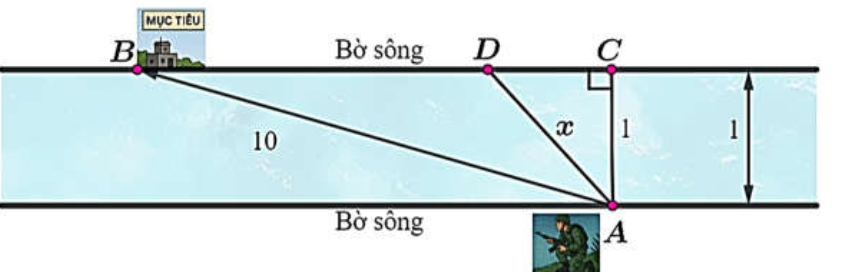

📘 TOÁN THỰC TẾ BÀI 3 - TÀI LIỆU HỌC TẬP
Môn Toán - Lớp 12
📘 DẠNG TRẮC NGHIỆM
Từ câu 123 - câu 142
Câu 123. Một chất điểm chuyển động theo quy luật $s(t) = 6t^2 - t^3$. Tính thời điểm t (giây) tại đó vận tốc v (m/s) của chuyển động đạt giá trị lớn nhất.
Câu 124. Một vật chuyển động theo quy luật $S=\frac{1}{4}t^4 - \frac{3}{2}t^2+2t-100$ với $t$ (giây) là khoảng thời gian kể từ lúc vật bắt đầu chuyển động, $S$ (mét) là quãng đường vật đi được trong khoảng thời gian đó. Hỏi vận tốc của vật đạt giá trị nhỏ nhất tại thời điểm $t$ bằng bao nhiêu?
Câu 125. Trong tất cả các hình chữ nhật có diện tích $S$, hình chữ nhật có chu vi nhỏ nhất bằng bao nhiêu?
Câu 126. Một tấm kẽm hình vuông ABCD có cạnh bằng 30 (cm). Người ta gập tấm kẽm theo hai cạnh EF và GH cho đến khi AD và BC trùng nhau như hình vẽ dưới đây để được một hình lăng trụ khuyết hai đáy. Giá trị của x để thể tích khối lăng trụ lớn nhất là
Chọn D.
Gọi $p$ là nửa chu vi tam giác DHF. Ta có: $DF = CH = x, FH = 30-2x \Rightarrow p = 15$. Thể tích khối lăng trụ như hình vẽ là $V = S_{\triangle DHF}.EF = 30\sqrt{15(15-x)(15-x)(15-30+2x)} = 30\sqrt{15(15-x)^2(2x-15)}$. Xét hàm số $f(x) = (15-x)^2(2x-15), x \in (\frac{15}{2}; 15)$. $f'(x) = -2(15-x)(2x-15) + 2(15-x)^2 = -2(15-x)(3x-30)$; $f'(x)=0 \Leftrightarrow \begin{cases} x=10 \\ x=15 \text{ (loại)} \end{cases}$. Bảng biến thiên:
| $x$ | $\frac{15}{2}$ | 10 | 15 | ||
|---|---|---|---|---|---|
| $f'(x)$ | + | 0 | -- | ||
| $f(x)$ | 0 | $\nearrow$ | 125 | $\searrow$ |
Câu 127. Khi nuôi cá thí nghiệm trong hồ, một nhà sinh vật học thấy rằng: Nếu trên mỗi đơn vị diện tích mặt hồ có $n$ con cá thì trung bình mỗi con cá sau một vụ cân nặng $P(n) = 480-20n$ (gam). Hỏi phải thả bao nhiêu cá trên một đơn vị diện tích của mặt hồ để sau một vụ thu hoạch cá đạt được tổng khối lượng lớn nhất?
Câu 128. Độ giảm huyết áp của một bệnh nhân được cho bởi công thức $G(x) = 0,025x^2(30-x)$, trong đó $x$ là liều lượng thuốc được tiêm cho bệnh nhân ($x$ được tính bằng miligam). Tính liều lượng thuốc cần tiêm cho bệnh nhân để huyết áp giảm nhiều nhất và tính độ giảm đó.
Câu 129. Một loại thuốc được dùng cho một bệnh nhân và nồng độ thuốc trong máu của bệnh nhân được giám sát bởi bác sĩ. Biết rằng nồng độ thuốc trong máu của bệnh nhân sau khi tiêm vào cơ thể trong $t$ giờ được cho bởi công thức $c(t) = \frac{t}{t^2+1}$ (mg/L). Sau khi tiêm thuốc bao lâu thì nồng độ thuốc trong máu của bệnh nhân cao nhất?
Câu 130. Nhà máy A chuyên sản xuất một loại sản phẩm cung cấp cho nhà máy B. Hai nhà máy thoả thuận rằng: Hàng tháng nhà máy A cung cấp cho nhà máy B số lượng sản phẩm theo đơn đặt hàng của B (tối đa 100 tấn sản phẩm). Nếu số lượng đặt hàng là x tấn sản phẩm thì giá bán cho mỗi tấn sản phẩm là $P(x) = 45-0,001x^2$ (triệu đồng). Chi phí để A sản xuất x tấn sản phẩm trong một tháng bao gồm:
- Chi phí cố định: 100 triệu đồng.
- Cho phí cho mỗi tấn sản phẩm làm ra: 30 triệu đồng.
Chọn C.
Số tiền mà nhà máy A thu được từ việc bán x tấn sản phẩm ($0 \le x \le 100$) cho nhà máy B là: $R(x) = x.P(x) = x(45-0,001x^2) = 45x - 0,001x^3$ (triệu đồng). Chi phí để A sản xuất x tấn sản phẩm trong một tháng là $C(x) = 100+30x$ (triệu đồng). Lợi nhuận (triệu đồng) mà nhà máy A thu được là: $P(x) = R(x)-C(x) = 45x-0,001x^3-(100+30x)=-0,001x^3+15x-100$. Xét hàm số $P(x)=-0,001x^3+15x-100$ với ($0 \le x \le 100$) ta có: $P'(x) = -0,003x^2+15; P'(x)=0 \Rightarrow x^2 = 5000 \Rightarrow x = 50\sqrt{2}$. Ta có $P(0)=-100; P(50\sqrt{2}) = 500\sqrt{2}-100 \approx 607; P(100) = 400$. Vậy nhà máy A thu được lợi nhuận lớn nhất khi bán khoảng $50\sqrt{2} \approx 70,7$ tấn sản phẩm cho nhà máy B mỗi tháng.
Câu 131. Một con cá hồi bơi ngược dòng để vượt một khoảng cách là 300 km. Vận tốc dòng nước là 6 km/h. Nếu vận tốc của cá bơi khi nước đứng yên là $v$ (km/h) thì năng lượng tiêu hao của cá trong $t$ giờ được cho bởi công thức $E(v) = cv^3t$, trong đó $c$ là một hằng số, $E$ được tính bằng jun. Tìm vận tốc bơi của cá khi nước đứng yên để năng lượng tiêu hao là ít nhất.
Chọn C.
Vận tốc cá bơi khi ngược dòng là $v-6$ (km/h). Thời gian cá bơi để vượt khoảng cách 300 km là $t = \frac{300}{v-6}$ (giờ). Năng lượng tiêu hao của cá để vượt khoảng cách đó là $E(v) = cv^3\frac{300}{v-6} = 300c\frac{v^3}{v-6}$ (jun), $v>6$. Ta có: $E'(v) = 300c\frac{(v^3)'(v-6)-v^3(v-6)'}{(v-6)^2} = 300c\frac{3v^2(v-6)-v^3}{(v-6)^2} = 300c\frac{3v^3-18v^2-v^3}{(v-6)^2}$; $E'(v) = 0 \Leftrightarrow 2v^3-18v^2=0 \Leftrightarrow \begin{cases} v=9 \\ v=0 \text{ (loại)} \end{cases}$. Bảng biến thiên:
| $v$ | 6 | 9 | $+\infty$ | ||
|---|---|---|---|---|---|
| $E'(v)$ | - | 0 | + | ||
| $E(v)$ | $+\infty$ | $\searrow$ | $72900c$ | $\nearrow$ | $+\infty$ |
Câu 132. Cho một tấm nhôm hình chữ nhật có chiều dài bằng 10cm và chiều rộng bằng 8cm. Người ta cắt bỏ ở bốn góc của tấm nhôm đó bốn hình vuông bằng nhau, mỗi hình vuông có cạnh bằng $x(cm)$, rồi gập tấm nhôm lại (như hình vẽ) để được một cái hộp không nắp. Tìm $x$ để hộp nhận được có thể tích lớn nhất.
Câu 133. Một người nông dân có 15.000.000 đồng muốn làm một cái hàng rào hình chữ E dọc theo một con sông (như hình vẽ) để làm một khu đất có hai phần chữ nhật để trồng rau. Đối với mặt hàng rào song song với bờ sông thì chi phí nguyên vật liệu là 60.000 đồng một mét, còn đối với ba mặt hàng rào song song nhau thì chi phí nguyên vật liệu là 50.000 đồng một mét. Tìm diện tích lớn nhất của đất rào thu được
Chọn D.
Gọi x là chiều dài một mặt hàng rào hình chữ E ($x>0$).
Gọi y là chiều dài mặt hàng rào hình chữ E song song với bờ sông ($y>0$).
Số tiền phải làm là: $x.3.50000 + y.60000 = 15.000.000 \Leftrightarrow y = \frac{500-5x}{2}$.
Diện tích đất: $S = x.y = x.\frac{500-5x}{2} = 250x - \frac{5}{2}x^2$.
Ta có: $S' = 250-5x$; $S'=0 \Leftrightarrow 250-5x \Leftrightarrow x=50$.
Bảng biến thiên:
| $x$ | 0 | 50 | $+\infty$ | ||
|---|---|---|---|---|---|
| $S'$ | + | 0 | -- | ||
| $S$ | 0 | $\nearrow$ | 6250 | $\searrow$ | $-\infty$ |
Vậy: $\max_{(0;+\infty)} S = 6250$ (m$^2$) khi $x=50$.
Câu 134. Từ một tấm bạt hình chữ nhật có kích thước $12m \times 6m$ như hình vẽ. Một nhóm học sinh trong quá trình đi dã ngoại đã gập đôi tấm bạt lại theo đoạn nối trung điểm 2 cạnh là chi rộng của tấm bạt sao cho 2 mép chiều dài của tấm bạt sát đất và cách nhau $x$ (m) (như hình vẽ). Tìm $x$ để khoảng không gian trong lều là lớn nhất.
Chọn B.
Phần không gian trong lều được tính bởi công thức thể tích hình lăng trụ đứng.
Ta có: $V = h.S_{đáy} = 12.S_{ABC}$. Như vậy để thể tích lớn nhất khi diện tích tam giác đáy ABC là lớn nhất.
Trong tam giác đáy ABC, vẽ đường cao AH. Ta có $AH = \sqrt{9-\frac{x^2}{4}}$.
Do đó diện tích: $S_{\triangle ABC} = \frac{1}{2}x\sqrt{9-\frac{x^2}{4}} = \frac{1}{4}x\sqrt{36-x^2}$.
Cách giải 1:
Xét hàm số $S(x) = \frac{1}{4}x\sqrt{36-x^2}$ với $x \in (0;6)$.
Ta có: $S'(x) = \frac{1}{4}(\sqrt{36-x^2} + x\frac{-2x}{2\sqrt{36-x^2}}) = \frac{1}{4}\frac{36-x^2-x^2}{\sqrt{36-x^2}}$.
$S'(x) = 0 \Leftrightarrow 36-2x^2 = 0 \Rightarrow x=3\sqrt{2}$.
Bảng biến thiên:
| $x$ | 0 | $3\sqrt{2}$ | 6 | ||
|---|---|---|---|---|---|
| $S'(x)$ | + | 0 | -- | ||
| $S(x)$ | $\nearrow$ | $\frac{9}{2}$ | $\searrow$ |
Vậy với $x=3\sqrt{2}$ (m) thì thể tích lều là lớn nhất.
Cách giải 2:
Theo bất đẳng thức quen thuộc là $ab \le \frac{a^2+b^2}{2}$, ta có:
$x\sqrt{36-x^2} \le \frac{x^2+36-x^2}{2} = 18 \Rightarrow S(x) = \frac{1}{4}x\sqrt{36-x^2} \le \frac{1}{4}.18 = \frac{9}{2}$.
Vậy diện tích tam giác đáy ABC lớn nhất bằng $\frac{9}{2}$, khi đó dấu "=" xảy ra
$\Leftrightarrow x = \sqrt{36-x^2} \Leftrightarrow \begin{cases} x \ge 0 \\ 36-x^2=x^2 \end{cases} \Leftrightarrow x=3\sqrt{2}$.
Câu 135. Cho một tấm nhôm hình vuông cạnh 6 cm. Người ta muốn cắt một hình thang như hình vẽ trong đó $AH=x, AE=2, CG=y, CF=3$. Tìm tổng $x+y$ để diện tích hình thang EFGH đạt giá trị nhỏ nhất.

Chọn C.
Ta có $S_{EFGH}$ nhỏ nhất $\Leftrightarrow S = S_{\triangle AEH} + S_{\triangle CGF} + S_{\triangle DGH}$ lớn nhất (do $S_{ABEF}$ không đổi).
Ta có: $S = \frac{1}{2}2x + \frac{1}{2}3y + \frac{1}{2}(6-x)(6-y) = -\frac{1}{2}xy-2x-\frac{3}{2}y+18$ (1)
Do EFGH là hình thang nên hai tam giác AEH, CGF đồng dạng, do đó:
$\frac{AE}{CG} = \frac{AH}{CF} \Leftrightarrow \frac{2}{y} = \frac{x}{3} \Leftrightarrow xy=6$ (2)
Từ (1) và (2) suy ra $S=21-2x-\frac{9}{x}$.
Cách giải 1:
Xét hàm số $f(x) = 21-2x-\frac{9}{x}$ với $x \in (0;6)$. Ta có:
$f'(x) = -2+\frac{9}{x^2} = \frac{9-2x^2}{x^2}$; $f'(x)=0 \Leftrightarrow 9-2x^2=0 \Leftrightarrow x = \frac{3\sqrt{2}}{2}$.
Bảng biến thiên:
| $x$ | 0 | $\frac{3\sqrt{2}}{2}$ | 6 | ||
|---|---|---|---|---|---|
| $f'(x)$ | + | 0 | -- | ||
| $f(x)$ | $-\infty$ | $\nearrow$ | $21-6\sqrt{2}$ | $\searrow$ | $\frac{15}{2}$ |
Vậy $S=f(x)$ đạt giá trị lớn nhất khi và chỉ khi $x=\frac{3\sqrt{2}}{2} \Rightarrow y = \frac{6}{x} = 2\sqrt{2}$. Do vậy $x+y = \frac{7\sqrt{2}}{2}$.
Cách giải 2:
$S = 21-2x-\frac{9}{x} = 21-(2x+\frac{9}{x})$. Ta thấy S lớn nhất khi và chỉ khi $2x+\frac{9}{x}$ đạt giá trị nhỏ nhất.
Áp dụng bất đẳng thức Cô-si cho hai số dương: $2x+\frac{9}{x} \ge 2\sqrt{2x.\frac{9}{x}} = 6\sqrt{2}$. Dấu đẳng thức xảy ra
$\Leftrightarrow 2x = \frac{9}{x} \Leftrightarrow x^2 = \frac{9}{2} \Leftrightarrow x = \frac{3\sqrt{2}}{2}$. Từ đây ta có $y=2\sqrt{2} \Rightarrow x+y = \frac{7\sqrt{2}}{2}$.
Câu 136. Một người đàn ông muốn chèo thuyền ở vị trí A tới điểm B về phía hạ lưu bờ đối diện, càng nhanh càng tốt, trên một bờ sông thẳng rộng 3 km (như hình vẽ). Anh có thể chèo thuyền của mình trực tiếp qua sông để đến C và sau đó chạy đến B, hay có thể chèo trực tiếp đến B, hoặc anh ta có thể chèo thuyền đến một điểm D giữa C và B và sau đó chạy đến B. Biết anh ấy có thể chèo thuyền 6 km/h, chạy 8 km/h và quãng đường BC = 8 km. Biết tốc độ của dòng nước là không đáng kể so với tốc độ chèo thuyền của người đàn ông. Tính khoảng thời gian ngắn nhất (đơn vị: giờ) để người đàn ông đến B.

Câu 137. Một ngọn hải đăng đặt ở vị trí A cách bờ biển một khoảng AB = 5 km. Trên bờ biển có một cái kho ở vị trí C cách B một khoảng là 7 km. Người canh hải đăng có thể chèo đò từ A đến vị trí M trên bờ biển với vận tốc 4km/h rồi đi bộ đến C với vận tốc 6 km/h. Vị trí của điểm M cách B một khoảng nhất với giá trị nào nhất để người đó đến kho nhanh nhất?
Câu 138. Cho nửa đường tròn đường kính AB = 2 và hai điểm C, D thay đổi trên nửa đường tròn đó sao cho ABCD là hình thang. Diện tích lớn nhất của hình thang ABCD bằng
Câu 139. Một sợi dây kim loại dài 60cm được cắt thành hai đoạn. Đoạn dây thứ nhất uốn thành hình vuông cạnh a, đoạn dây thứ hai uốn thành đường tròn bán kính r. Để tổng diện tích của hình vuông và hình tròn nhỏ nhất thì tỉ số $\frac{a}{r}$ bằng:

Chọn B.
Gọi x (cm) là độ dài của đoạn dây cuộn thành hình tròn ($0
Diện tích hình vuông cạnh $a = \frac{60-x}{4}$ là $S_2 = \left(\frac{60-x}{4}\right)^2$.
Tổng diện tích hai hình: $S = S_1+S_2 = \frac{x^2}{4\pi} + \left(\frac{60-x}{4}\right)^2 = \frac{(4+\pi)x^2 - 120\pi x + 3600\pi}{16\pi}$.
Đạo hàm $S'=\frac{(4+\pi)x-60\pi}{8\pi}$; $S'=0 \Leftrightarrow x = \frac{60\pi}{4+\pi}$; $S'' = \frac{4+\pi}{8\pi} > 0$.
Suy ra hàm S chỉ có một điểm cực tiểu là $x=\frac{60\pi}{4+\pi}$.
Do đó S đạt giá trị nhỏ nhất tại $x=\frac{60\pi}{4+\pi}$. Với $x=\frac{60\pi}{4+\pi} \Rightarrow r = \frac{30}{4+\pi}$ và $a=\frac{60}{4+\pi} \Rightarrow \frac{a}{r}=2$.
Câu 140. Một mảnh giấy hình chữ nhật có chiều dài 12cm và chiều rộng 6cm. Thực hiện thao tác gấp góc dưới bên phải sao cho đỉnh được gấp nằm trên cạnh chiều dài còn lại. Hỏi chiều dài L tối thiểu của nếp gấp là bao nhiêu?
Chọn B.
Xét mô hình với các điểm A, B, E, F, G như hình vẽ.
Đặt $EB = x$ (cm) với $0 < x < 6 \Rightarrow AE = 6-x$. Do $\triangle EBG = \triangle EFG$ nên $EF=BE=x$.
Trong tam giác vuông AEF có $\cos \widehat{AEF} = \frac{6-x}{x} \Rightarrow \cos \widehat{BEF} = \frac{x-6}{x}$ (hai góc bù nhau).
Ta có $\widehat{BEF} = 2\widehat{BEG}$ nên $\cos \widehat{BEF} = \cos(2\widehat{BEG}) = 2\cos^2\widehat{BEG}-1 = \frac{x-6}{x}$
$\Rightarrow \cos\widehat{BEG} = \sqrt{\frac{x-3}{x}}$ (do $\widehat{BEG}$ là góc nhọn của tam giác nên $\cos\widehat{BEG}>0$).
Trong tam giác vuông BEG có $EG = \frac{BE}{\cos\widehat{BEG}} = \frac{x}{\sqrt{\frac{x-3}{x}}} = \frac{x\sqrt{x}}{\sqrt{x-3}} = \sqrt{\frac{x^3}{x-3}}$.
Xét hàm $f(x)=\frac{x^3}{x-3}$ với $x \in (0;6)$, ta có: $f'(x) = \frac{3x^2(x-3)-x^3}{(x-3)^2} = \frac{2x^3-9x^2}{(x-3)^2}$;
$f'(x)=0 \Leftrightarrow 2x^3-9x^2=0 \Leftrightarrow \begin{cases} x=0 \text{ (loại)} \\ x=\frac{9}{2} \end{cases}$.
Bảng biến thiên:
| $x$ | 0 | $\frac{9}{2}$ | 6 | ||
|---|---|---|---|---|---|
| $f'(x)$ | $-$ | 0 | $+$ | ||
| $f(x)$ | $\searrow$ | $\frac{243}{4}$ | $\nearrow$ | 72 |
Vậy $\min_{(0;6)}f(x)=\frac{243}{4}$ nên $EG=\sqrt{f(x)}$ đạt giá trị nhỏ nhất bằng $\frac{9\sqrt{3}}{2}$, khi đó $x=\frac{9}{2}$.
Câu 141. Hình dáng phần đất liền của hai xã thuộc tỉnh Đồng Tháp được mô hình hóa bởi đồ thị hàm số $y=\frac{x^2+ax+b}{x-2}$; biết đồ thị có một điểm cực trị là (1; 1), với hệ trục tọa độ Oxy như hình vẽ, đơn vị trên mỗi trục là 10 mét. Để thuận tiện cho giao thông hai xã, lãnh đạo tỉnh đã phê duyệt dự án xây một chiếc cầu nối phần đất liền của hai xã này. Nhằm tiết kiệm chi phí cho công trình, người kỹ sư trưởng thiết kế có nhiệm vụ nghiên cứu để chọn được hai vị trí A, B trên phần đất liền hai xã sao cho độ dài chiếc cầu (đoạn AB) là ngắn nhất có thể. Hỏi độ dài ngắn nhất của chiếc cầu đó (tính theo đường chim bay) là bao nhiêu mét (làm tròn đến hàng phần chục)?
Chọn B.
Ta có $y' = \frac{x^2-4x-2a-b}{(x-2)^2}$. Vì (1; 1) là điểm cực trị của đồ thị hàm số nên $\begin{cases} y(1)=1 \\ y'(1)=0 \end{cases}$
$\Rightarrow \begin{cases} \frac{1+a+b}{1-2}=1 \\ 1^2-4.1-2a-b=0 \end{cases} \Rightarrow \begin{cases} a+b=-2 \\ 2a+b=-3 \end{cases} \Rightarrow \begin{cases} a=-1 \\ b=-1 \end{cases}$.
Hàm số trở thành $y = \frac{x^2-x-1}{x-2} = x+1+\frac{1}{x-2}, x \neq 2$.
Ta có: $y' = 1 - \frac{1}{(x-2)^2}$; $y'=0 \Rightarrow (x-2)^2-1=0 \Rightarrow \begin{cases} x=3 \\ x=1 \end{cases}$.
Gọi $A(2+a; 3+a+\frac{1}{a}), B(2-b; 3-b-\frac{1}{b})$ là hai điểm thuộc hai nhánh đồ thị với $a,b>0$.
Ta có:
$AB^2 = (a+b)^2+\left(a+b+\frac{1}{a}+\frac{1}{b}\right)^2 = (a+b)^2 + \left(a+b+\frac{a+b}{ab}\right)^2 = (a+b)^2\left[1+\left(1+\frac{1}{ab}\right)^2\right]$
$= (a+b)^2\left(2+\frac{2}{ab}+\frac{1}{a^2b^2}\right) \ge (2\sqrt{ab})^2\left(2+\frac{2}{ab}+\frac{1}{a^2b^2}\right) = 4ab\left(2+\frac{2}{ab}+\frac{1}{a^2b^2}\right)$
$= 8ab+8+\frac{4}{ab} \ge 2\sqrt{8ab.\frac{4}{ab}}+8 = 8+8\sqrt{2}$.
Độ dài ngắn nhất của cây cầu (theo đường chim bay) là $AB \times 10 = \sqrt{8+8\sqrt{2}} \times 10 \approx 43,9$ m.
Dấu "=" xảy ra khi và chỉ khi $a=b$ và $8ab=\frac{4}{ab} \Leftrightarrow a=b=\frac{1}{\sqrt[4]{2}}$.
Câu 142. Một chiến sĩ đặc công đang nấp ở bờ sông, cần phải bơi qua bờ bên kia để tấn công mục tiêu. Có thể xem con sông này là thẳng và có độ rộng 100 m; vận tốc bơi của chiến sĩ bằng một phần ba vận tốc chạy bộ. Biết rằng mục tiêu tấn công cách chiến sĩ 1 km theo đường chim bay; hỏi chiến sĩ phải bơi bao nhiêu mét để đến được mục tiêu nhanh nhất (làm tròn kết quả đến hàng đơn vị)?
Gọi C là hình chiếu vuông góc của A (vị trí chiến sĩ xuất phát) đối với bờ bên kia và D thuộc đoạn BC là vị trí mà chiến sĩ sẽ bơi đến trước khi chạy bộ tấn công mục tiêu tại A.
Ta chuẩn hóa bài toán như sau:
- 1 đơn vị độ dài = 100 m; khi đó $AC=1, AB=10$.
- Vận tốc bơi trên sông của chiến sĩ là 1 (đơn vị vận tốc); vận tốc chạy của chiến sĩ là 3 (đơn vị vận tốc).
Đặt $AD = x \in (1; 10) \Rightarrow CD = \sqrt{x^2-1}$; $BC = \sqrt{AB^2-AC^2} = 3\sqrt{11}$;
$BD = BC - CD = 3\sqrt{11}-\sqrt{x^2-1}$.
Tổng thời gian từ khi chiến sĩ xuất phát đến khi tiếp cận mục tiêu là:
$t = \frac{AD}{1} + \frac{BD}{3} = x + \frac{3\sqrt{11}-\sqrt{x^2-1}}{3} = \frac{1}{3}\sqrt{11}-\frac{1}{3}\sqrt{x^2-1}+x$.
Xét hàm $f(x)=\sqrt{11}-\frac{1}{3}\sqrt{x^2-1}+x$; $x \in (1;10)$; $f'(x)=1-\frac{1}{3}\frac{x}{\sqrt{x^2-1}}$;
$f'(x)=0 \Leftrightarrow 3\sqrt{x^2-1}=x \Rightarrow 9x^2-9=x^2 \Rightarrow x = \frac{3\sqrt{2}}{4} > 0$.
Bảng biến thiên:
| $x$ | 1 | $\frac{3\sqrt{2}}{4}$ | 10 | ||
|---|---|---|---|---|---|
| $f'(x)$ | $-$ | 0 | $+$ | ||
| $f(x)$ | $\searrow$ | $\nearrow$ |
Chiến sĩ tiếp cận mục tiêu nhanh nhất khi $AD=x=\frac{3\sqrt{2}}{4}$. Do đó chiến sỹ phải bơi một đoạn $\frac{3\sqrt{2}}{4} \times 100 \approx 106$ m.